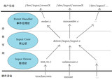

第一次接触单片机，自然选择了简单的51单片机。然而我的操作系统是 Linux 。在 Windows 下上手51似乎很容易。但是 Linux 上搭建 51 开发环境不是很顺。
那么谈谈 Linux 我如何搭建 STC89C52RC 的开发环境吧。
（一）
选择自己喜好的代码编辑器即可。vim ， emacs ， gedit 等都可以。
（二）
安装编译器。一般选择 sdcc 。一般可从发行版的包管理器中直接安装。
如Arch中：
$ sudo pacman -S sdcc
如果不行，需要自行下载编译。
简单介绍使用sdcc：
假如当前目录有一个写好的源文件 main.c 。 使用如下简单方式即可编译。
$ sdcc main.c
生成的若干个文件中 main.ihx 是一个生成的16进制可执行文件。后面便可以将其烧录到单片机中。
(三)
将生成的可执行程序烧录到单片机是需要一条下载线的。一般说来使用 USB 转串口的下载线。插上之后，在 /dev 里面有个设备叫 ttyUSB* 说明可以进行后面内容。
否则你可能需要安装 USB 转串口的驱动。
选择烧录工具。网上大部分使用的是 gSTCISP 这个工具烧录。但是在我尝试之后，总是卡在 We are trying to connect your MCU...这个地方。
起初我还以为下载线出现问题了。后来发现不是。你可以尝试。注意 gSTCISP 需要的是二进制文件，因此需要把 main.ihx 转换为二进制文件。
一个转换例子：
$ makebin < main.ihx > main.bin
你需要把文件名更改成你自己相应文件名。其他方法还有很多，自行搜索。
通过我测试的一个烧录工具 stcflash 。这是一个 python 脚本。因此你需要安装 python 环境。大部分 Linux 发行版安装了 python 。但是你需要安装一个额外的运行库 python-serial 。
$ sudo pacman -S python-serial
将下载好的 stcflash.py 放入源文件目录。接下来开始烧录。
首先关闭板子。执行
$ sudo python ./stcflash.py ./main.ihx
打开开发板即可烧录进去。成功结果如下：
Connect to /dev/ttyUSB0 at baudrate 2400
Detecting target... done
FOSC: 11.996MHz
Model: STC89C52RC (ver4.3C)
ROM: 8KB
Baudrate: 38400
Erasing target... done
Size of the binary: 218
Programming: #################### done
另外二进制文件使用 stcflash 也可以烧录进入。
sdcc 下载地址：http://sdcc.sourceforge.net/snap.php#Linux
gSTCISP 下载地址：http://osdn.jp/projects/sfnet_gstcisp/releases/?fulllist=1
stcflash 下载地址：https://github.com/RainMark/stcflash.git
关键字：Linux stc51单片机
编辑：什么鱼 引用地址：http://news.eeworld.com.cn/mcu/2019/ic-news031843535.html
本网站转载的所有的文章、图片、音频视频文件等资料的版权归版权所有人所有，本站采用的非本站原创文章及图片等内容无法一一联系确认版权者。如果本网所选内容的文章作者及编辑认为其作品不宜公开自由传播，或不应无偿使用，请及时通过电子邮件或电话通知我们，以迅速采取适当措施，避免给双方造成不必要的经济损失。
推荐阅读
linux-arm开发环境简单配置
关于linux-arm开发环境简单配置是ARM学习的第一步，很多初学者会在这问题上纠结很久都不能配置好开发环境。推荐大家看一下韦东山视频，讲得很详细，代码基本上都会给你解释（很多视频都不会给你解释），适合初学者。fedora8开发环境简单配置linux-arm开发环境简单配置Window上：安装终端软件 SecureCRT,putty等安装ftp软件 cutftp等配置串口工具 超级终端安装tftp服务，也可以使用linux上的tftp。linux上：1，ssh默认情况下，ssh在fedora8下应该是安装的，那么就无需安装了。可以如下查询：rpm -qa openssh如果显示openssh-4.7p1-4.fc8一类的信息表示
发表于 2019-11-23
Linux学习方法分享
随着Linux应用的扩展许多朋友开始接触Linux，对于刚接触Linux的人而严，不知从何处开始学起。以下是一位Linux系统管理员，在看了许多有关Linux的文档和书籍并为学习Linux付出了许多艰苦的努力。当真正获得了一份正式的Linux系统管理工作后，他才更加深刻地理解了Linux的灵魂：服务与多用户。Linux系统知识是非常广博的，但是只要掌握了重点知识，管理它并没有想象中的那么可怕。在下面他将把作为系统管理员的一些工作心得和总结出来的经验系统地介绍给大家。一、 学习的目的通过Linux的学习掌握UNIX的目的想必不用多说了，在这个网络人才身价倍增的年代，想靠技术吃饭又不想掌握网络和编程技术是不明智的。当一人
发表于 2019-11-20
学习嵌入式Linux的笔记和体会
一个典型的桌面Linux系统包括3个主要的软件层---linux内核、C库和应用程序代码。 内核是唯一可以完全控制硬件的层，内核驱动程序代表应用程序与硬件之间进行会话。内核之上是C库，负责把POSIX API转换为内核可以识别的形式，然后调用内核，从应用程序向内核传递参数。应用程序依靠驱动内核来完成特定的任务。 在设计嵌入式应用的时候，可以不按照这种层次，应用程序越过C库直接和内核会话，或者把应用和内核捆绑在一起，甚至可以把应用写为内核的一个线程，在内核中运行，虽然这样在移植上带来了困难，但考虑嵌入式系统对尺寸要求小的特点，是完全可行的。不过我们使用三层软件结构的模式来学习嵌入式linux将会是我们认识更清晰
发表于 2019-11-20
sysfs platform总线
sysfs 文件系统linux2.6内核引入sysfs文件系统，sysfs可以看成与proc,devfs和devpty同类别的文件系统，该文件系统是虚拟的文件系统，可以更方便对系统设备进行管理。它可以产生一个包含所有系统硬件层次视图，与提供进程和状态信息的proc文件系统十分类似。sysfs把连接在系统上的设备和总线组织成为一个分级的文件，它们可以由用户空间存取，向用户空间导出内核的数据结构以及它们的属性。sysfs的一个目的就是展示设备驱动模型中各组件的层次关系，其顶级目录包括block,bus,drivers,class,power和firmware等.它把实际连接到系统上的设备和总线组织成一个分级的文件，用户空间的程序同样
发表于 2019-11-19

ARM Linux内核Input输入子系统浅解
--以触摸屏驱动为例第一章、了解linux input子系统 Linux输入设备总类繁杂，常见的包括有按键、键盘、触摸屏、鼠标、摇杆等等，他们本身就是字符设备，而linux内核将这些设备的共同性抽象出来，简化驱动开发建立了一个input子系统。子系统共分为三层，如图1所示。图1 input输入子系统 驱动层和硬件相关，直接捕捉和获取硬件设备的数据信息等（包括触摸屏被按下、按下位置、鼠标移动、键盘按下等等），然后将数据信息报告到核心层。核心层负责连接驱动层和事件处理层，设备驱动(device driver)和处理程序(handler)的注册需要通过核心层来完成，核心层接收来自驱动层的数据信息
发表于 2019-11-19

TQ2440开发板 Linux第一个驱动--点灯
我用的是TQ2440开发板,这个程序是参考韦东山的.4盏LED灯以下是驱动程序#include <linux/module.h>#include <linux/kernel.h>#include <linux/fs.h>#include <linux/init.h>#include <linux/delay.h>#include <asm/uaccess.h>#include <asm/irq.h>#include <asm/io.h>#include <asm/arch/regs-gpio.h>#include <
发表于 2019-11-14
 STC51单片机
STC51单片机